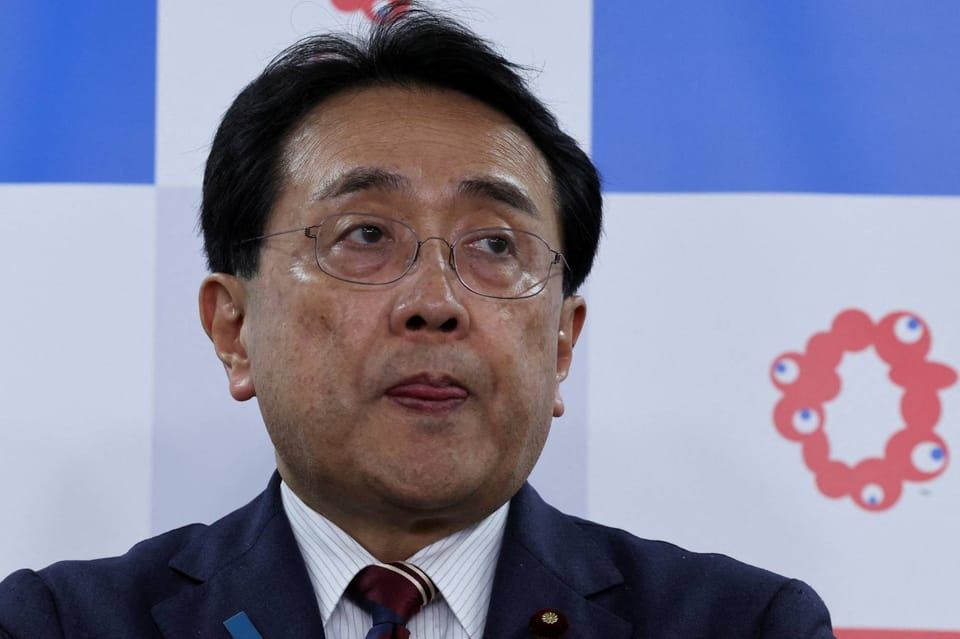

世界苦茶08月31日新闻 | 40条 | 多国政要到达中国

多国政要到达中国 | 印尼总统因国内动乱放弃访华 | 特朗普称无计划出席QUAD峰会 | 研究称人每天吸入大量微塑料
每日三條新聞解析
苦茶数据
美元兑人民币：7.12（昨日7.12，前日7.12）
美元兑日元：146.82（昨日146.94，前日147.14）
上证指数：休市（昨日3857，前日3792）
标普500指数：休市（昨日6460，前日6501）
比特币：108696（昨日109684，前日112765）
布伦特原油：67.48（昨日68.18，前日67.43）
中国新闻
• 卢卡申科将第16次访华 ：即将第16次以白罗斯总统身份访华的卢卡申科，在接受中国官媒专访时说，中国强则白罗斯强，“我们永远不会背叛与中国人民、中国、我的朋友习近平主席的友谊”。据白罗斯国家通讯社报道，卢卡申科星期六启程对中国进行工作访问，将出席星期天开始在天津举行的上海合作组织峰会，以及9月3日在北京天安门广场举行的阅兵式。卢卡申科在中国中央电视台星期五晚播出的《高端访谈》节目专访中，评价中国国家主席习近平是“卓越的领导人，受到世人敬重的领导人”，并指中国一直在加速发展，不是“加速走”，而是“跑起来”，“我也正努力跑起来，即将第16次访华，我将奔向中国”。
• 马来西亚总理安华将访华 ：应中国国家主席习近平的邀请，马来西亚首相安华将于星期天起至9月3日，赴中国展开为期四天的访问，出席上海合作组织峰会，以及中国人民抗日战争暨世界反法西斯战争胜利80周年纪念活动。《东方日报》报道，这是安华自2022年上任以来，第四次访问中国。 马国外交部星期六发文告指出，安华这次代表马国出席上述活动，不仅体现马国持续深化与中国关系的承诺，更体现了马国对中国人民在第二次世界大战期间抗争和牺牲的声援和敬意。
• 习近平再强调八项规定作风 ：中共总书记习近平近日再就中央八项规定、作风建设强调，党的作风“关系人心向背，关系党的生死存亡”，要持续抓好中央八项规定精神贯彻落实，下大气力把党建设好，打造一支党性纯洁、纪律严明的队伍。中国官媒新华社星期五发出的报道称，习近平指出，这次深入贯彻中央八项规定精神学习教育，工作开展扎实，取得明显成效。但“四风”问题具有顽固性、反复性，必须以打攻坚战、持久战的决心和恒心，锲而不舍落实中央八项规定精神，推进作风建设常态化长效化。他强调，要增强作风教育针对性实效性，突出新提拔干部、年轻干部、关键岗位干部的教育引导；要建立健全经常性发现问题、解决问题机制，动真格整改整治，持续释放一抓到底、一严到底的强烈信号；要强化监督执纪，抓实党组织日常监督，有效发挥群众监督作用，对顶风违纪的速查严处；要落实作风建设政治责任，严负其责、严管所辖，以铁规矩锻造好作风。
• 福建舰将集齐航母五件套 ：中国官媒央视本周发文写道，中国航空母舰福建舰将集齐“航母五件套”，即隐身舰载战斗机、多用途弹射舰载战斗机、固定翼舰载预警机、固定翼电子战机和反潜直升机。央视CCTV4微信公众号星期三在题目为《向海图强！中国航母三舰齐辉！》的文章中，引述未具名的专家分析称，福建舰将集齐“航母五件套”。从世界航母发展来看，一艘成熟的航母需具备制空、制海、预警，电子对抗及反潜等关键能力，支撑这些能力的核心舰载机体系被称为“航母五件套”。文章称，集齐“航母五件套”难度极大，既要突破弹射、隐身等顶尖技术瓶颈，又要有支撑从舰体到舰载机量产的完整工业体系，更离不开长期巨额投入和专业人才梯队，这是对国防科技硬实力的全方位考验。
• 谢锋称中美民间友谊深厚 ：中国驻美国大使谢锋在一场纪念中国抗战胜利活动上说，从历史烽火到时代新程，中美民间友谊始终是两国关系最深沉的根基、最持久的动力。据中国驻美大使馆官网消息，谢锋当地时间星期三出席中国驻美使馆与中国国务院新闻办联办的“感知中国—中美民间友好音乐故事会”并致辞。活动是为纪念中国人民抗日战争暨世界反法西斯战争胜利80周年。谢锋说，在抗战最艰难岁月，当各国国门对犹太难民紧闭，中国上海向三万犹太难民敞开胸怀，其中包括后来成为美国卡特政府财长的布卢门撒尔；在山东潍县，中国百姓冒死接济被日军囚禁的2300余名盟国侨民，其中包括日后成为美国驻华大使的恒安石。
• 中方称中印关系稳步改善 ：中国强调，改善与印度之间的关系符合中印两国利益，而且自两国领导人去年会晤以来，双方已采取措施稳步确保两国关系稳定。据彭博社报道，中国外交部星期五以书面形式答复提问时说：“中印关系改善符合两国共同利益，也是双方共同努力的成果。” 中国外交部强调，两国之间不存在秘密外交，只有正常的沟通与互动。在这之前，彭博社报道，中国曾在3月与印度进行不声张的接触，以试探改善两国关系的可能性。印度知情官员称，中国国家主席习近平致函印度总统穆尔穆，对于任何可能损害中国利益的涉美协议表达关切。
• 中方回应泰宪法法院罢免佩通坦 ：泰国宪法法院裁定佩通坦违宪、解除她的首相职务。中国外交部强调，这是泰国内政，希望泰国保持稳定和发展。据中国外交部官网消息，中国外交部星期六以发言人答记者问形式回应称，这是泰国内政事务。作为泰国的亲密友好近邻，中国希望泰国保持稳定和发展。今年6月中旬，佩通坦与柬埔寨参议院主席洪森针对泰柬边境局势通电话的一段录音外泄。佩通坦在通话时称洪森为“叔叔”，请洪森协助她解决边境问题，还批评泰国军方领袖。 （翻评：中国站在泰国军政府一边，这下至少让泰国其他党派知道和中国无法合作。）
• 中方批菲纵容台外长访菲 ：针对有报道指台湾外交部长林佳龙以基金会负责人身份访问菲律宾，中国大陆外交部回应时批评，菲律宾纵容林佳龙到访，为台独从事反华活动提供舞台。大陆外交部发言人星期五在官网就菲律宾纵容台湾外交部长林佳龙访菲答记者问时说，菲律宾这么做是为台独分裂势力从事反华活动提供舞台，严重违反国际关系基本准则和菲方在涉台问题上所作承诺。发言人指近期菲方在涉台问题上采取错误和挑衅言行，持续虚化掏空一个中国原则，持续损害中菲关系，再次暴露菲律宾政府言而无信的恶劣品质。中方对此坚决反对，已在北京和马尼拉向菲方提出严正交涉和强烈抗议。
• 中美经贸官员在华府会谈 ：中国商务部副部长李成钢在与美国官员会面时说，中美要通过平等对话管控分歧，拓展合作。据中国商务部官网消息，中国商务部国际贸易谈判代表兼副部长李成钢当地时间星期三至五访问美国，与美国财政部、商务部和贸易代表办公室相关官员举行会谈。双方围绕落实中美两国元首通话共识，就中美经贸关系、落实中美经贸会谈共识等问题进行了交流沟通。
亚太印太新闻
• 泰国任蓬探为代理总理 ：泰国政府召开内阁特别会议，任命蓬探为看守内阁代理首相。中国新闻社引述泰国《曼谷邮报》等媒体的报道说，星期六特别会议结束后宣布了这项任命，同时宣布新任首相秘书长人选。会议还批准了过渡时期行动框架，以确保看守内阁在权限内履行职责并实现稳定。7月1日，泰国宪法法院宣布暂停佩通坦行使首相职权。7月3日，泰国政府召开内阁会议，授权时任副首相兼内政部长蓬探全面代行首相职权。
• 泰军方称政局不扰边防 ：泰国国防部指出，泰国缺乏正式政府不会影响它与柬埔寨的边境安全。在宪法法院解除首相佩通坦职务后，泰国正努力填补权力真空。泰国宪法法院星期五裁定，已停职的佩通坦在与柬埔寨参议院主席洪森通话时，违反宪法“道德行为准则”，解除其首相职务，此举引发了政治动荡。新华社报道，按照宪法规定，当首相职务终止，全体内阁成员也须一并卸任，国会下议院将负责选出新一任首相。代首相蓬探将率内阁其余成员继续履行看守职责，直至新内阁就职。预料，新政府最早会在下周成立。
• 美参院军委称美台或联制武器 ：美国参议院军委会主席维克在记者会上说，他预计美台未来将联手制造武器。这番言论与台湾总统赖清德在维克一行会面时的讲话一致。据路透社报道，虽然美台之间没有正式的外交关系，但美国一直是台湾武器的主要供应国。不过，自总统特朗普今年1月入主白宫以来，美国尚未对台湾公布任何新的军售案。正在台湾访问的维克，星期六在台北举行的记者会上，被问及美台未来是否能联手制造武器时说：“我认为美台未来将联手制造武器，但也要看所具备的技术能力。我们愿为此接受任何建议和创新意见。”
• 印尼总统慰问遇害骑士家属 ：印度尼西亚总统普拉博沃到不幸遇难的私召电单车骑士家中慰问，并承诺监督调查。综合路透社和法新社报道，普拉博沃星期五晚到21岁私召电单车骑士的家中，向死者父母承诺，他将亲自监督调查这起事件。雅加达警方已就私召电单车骑士死亡，拘留七名警官进行讯问。
• 日防卫费拟增至八点八万亿 ：日本国防部周五要求政府在明年4月开始的新财政年，拨出高达8.8万亿日元作为国防开支，包括部署无人机编队和购买远程导弹，以应对来自中国和朝鲜日益棘手的挑战。这笔预算比本财年创纪录的8.7万亿日元还要多。一名国防部官员在东京对媒体说，新的预算反映了日本周边日益严峻的安全环境。这些预算中，值得注意的是国防部寻求在新财年获得3128亿日元拨款，用于部署空中、海面和水下的无人机等遥控系统，以执行监控和袭击等任务。
• 普拉博沃取消访华留守应对 ：印尼总统普拉博沃在8月30日晚通过发言人宣布取消参加9月3日北京阅兵的访华行程，以留在国内应对示威局势；他同时向中国政府致歉，并称9月联合国大会的访问行程也在考虑取消。TikTok在30日称已暂停印尼国内的直播服务数天。印尼政府本周内召见了包括Meta和TikTok在内的多家社交媒体公司代表，告诉他们应加大内容审查力度以应对虚假信息传播。
• 台民众党发动游行促司改 ：适逢前主席柯文哲被关押和中央党部被搜索满周年，台湾在野的民众党发起游行活动，呼吁推动司法改革，让台湾人的正义，奋起重生。综合台湾《联合报》和ETtoday新闻云报道，民众党星期六举办“司法改革·公民走读”游行活动，并发布“830行动宣言”，号召公民勇敢起身，为所有台湾人民改革司法体制、争取司法独立、捍卫司法公正。民众党在宣言中回溯去年8月30日发生的事件，即台湾史上首次发生主要在野党中央党部与党主席住家遭执政党发动检调同步搜索的事件，时任党主席柯文哲被检调带走遭关押迄今已满周年。
• 印媒称莫迪或将会晤习近平 ：印度媒体报道，印度总理莫迪将于星期天在上海合作组织峰会期间，与中国国家主席习近平会面。《印度斯坦时报》报道了这则消息。印度新德里电视台则报道，莫迪和习近平预计当天将举行两场双边会晤。另一方面，莫迪出席上海合作组织峰会前，以书面形式接受日本《读卖新闻》访问时说，稳定、可预测和友好的印中双边关系，将对地区和全球的和平与繁荣产生积极影响。
• 台约谈艺人勿成统战工具 ：台湾文化部约谈23名赴中国大陆发展并配合发表统战言论的艺人后，表明要关怀艺人立场，避免他们变成统战工具，陆委会回应时称，未来再犯必罚。综合台湾《中国时报》《联合报》报道，台陆委会提供赴大陆发展且配合中共发表统战贴文的台湾艺人名单，请文化部进行约谈，其中包括欧阳娜娜、侯佩岑、赵又廷、陈乔恩、陈妍希、汪东城等人。台文化部星期五公布调查结果，指多数艺人表达贴文为中国大陆经纪公司所为或未意识到可能触法，表达“未来一定会遵守相关法令”。文化部在了解及沟通过程中，也不断重申和提醒赴陆发展艺人应遵守相关法令。
• 《纽约时报》称特朗普“已无计划”访问印度出席四方峰会： 《纽约时报》周六报道称，美国总统特朗普“已无计划”在今年晚些时候访问印度参加“四方安全对话”峰会。报道称，特朗普与印度总理莫迪之间的关系在最近几个月显著恶化。《纽约时报》在题为《诺贝尔奖与一次紧张通话：特朗普-莫迪关系如何瓦解》的报道中援引熟悉特朗普日程的消息人士称，尽管特朗普最初曾向莫迪保证今年晚些时候将赴印参加四方峰会，但如今已无此行程安排。美国方面尚未就此消息作出官方回应。与此同时，美国驻新德里大使馆发言人表示：“我们没有收到任何正式信息，请向白宫咨询总统日程的细节。”这场定于11月在新德里举行的四方峰会将汇聚印度、澳大利亚、日本和美国领导人，共同讨论关键的地缘政治问题。
科技新闻
• 美撤销三星海力士在华设备豁免 ：根据美国联邦政府发布的政府公报，美国通过撤销三星和SK海力士在中国接收美国半导体制造设备的授权，加大这两家韩国晶片制造商在中国生产晶片的难度。路透社报道，美国商务部此前给予三星和SK海力士有关豁免，使它们不受2022年向中国出售美国半导体设备的全面限制。现在这两家公司需要获得许可才能为中国厂房采购设备。
• 发改委称AI发展须防无序 ：发改委高技术司副司长张铠麟在周五的新闻发布会上对记者说：发展“人工智能+”要坚持协同联动和因地制宜，形成各具特色、各展实效、优势互补的协同发展态势，坚决避免无序竞争、一哄而上。他的言论与中国国家主席习近平上月对地方政府在人工智能领域过度投资的警告相呼应。凸显出，决策者希望避免重蹈电动汽车等其他新兴产业产能过剩的覆辙，此类问题已加剧了通缩压力。尽管国家发改委未具体说明该行业的哪些领域需要调控，但在构建支撑人工智能发展的数据中心方面，投资一直尤为集中。国家发改委还强调，要确保“人才、资本等各种要素资源有序流动”。
• 英伟达两大客户贡献占39% ：Nvidia 公司周三在提交给美国证券交易委员会的一份财务文件中披露，两家客户在第二季度的贡献了其总收入的39%，“客户A”占总收入的23%，“客户B”占总收入的16%。这一比例高于去年同期，当时Nvidia的前两大客户分别占销售额的14%和11%，这引发了对该芯片制造商客户集中度的担忧。本周的披露引发了一场新的争论，即爆炸式增长是否是由少数几家大型云服务提供商推动的。英伟达在文件中写道：“我们经历过大量收入来自有限数量的客户的时期，这种趋势可能会持续下去。”英伟达 CFO 科莱特·克雷斯在一份声明中表示，“大型云服务提供商”约占公司数据中心收入的50%，数据中心业务在第二季度占英伟达总收入的88%。
• 研究称每日吸入大量微塑料 ：针对微塑料危害进行的最新研究发现，人们在家中或车内可能吸入大量会深入肺部的微塑料，这对人们接触微塑料的途径及其健康威胁发出了新的警报。这项在科学和医学期刊《公共科学图书馆·综合》上发表的研究估计，人类每天可能吸入多达6万8000个微塑料颗粒。此前的研究也发现了空气中有较大颗粒的微塑料，但它们在空气中悬浮的时间较短，也无法深入呼吸系统，对健康的威胁较小。较小的颗粒大小为1到10微米，约为人类头发厚度的七分之一，更容易散布全身，“吸入微塑料对健康的影响可能比我们意识到的更为严重”。
财经新闻
• 印美保持沟通无报复关税 ：据知情官员透露，印度和美国目前保持非正式沟通渠道畅通，新德里暂无报复美国总统特朗普对印度征50%关税的计划。 彭博社引述印度商工部一名高级官员说，虽然双边贸易协议谈判推迟，但两国仍就国防和外交政策等关键问题继续沟通。由于相关磋商并未公开，官员要求匿名。这名官员以特朗普政府官员与印度外交部和国防部高级代表本周的线上会谈为例，说明两国政府的关键部门在继续接触。
• 美日谈判因美米要求卡壳 ：《日本经济新闻》星期六报道，美国特朗普政府要求日本购买更多美国大米，结果由于日方强烈反对这一条件，导致双方本周的贸易谈判受阻。日本政府首席发言人说，日本首席关税谈判代表星期四突然取消赴美行程，理由是存在一些“须在行政层面讨论的问题”。美日双方正在努力敲定7月协议的细节，但日经报道引述日本匿名政府官员的消息称，美国总统特朗普修订后的要求包括要日本承诺购买更多美国大米。
• 通胀预期助金价涨至四月新高 ：美国通货膨胀数据强化了美国联邦储备局9月减息的预期，推动金价攀升到四个月来新高。现货黄金星期五收报3447.95美元，全周上涨2.3%。美国7月份的消费者支出稳健增长，而潜在通胀也有所回升，因进口关税推高了一些商品的价格。美国个人消费支出物价指数环比上涨0.2%，同比上涨2.6%，均符合市场预期。
• 巴西研议反制美高关税 ：巴西启动了一项程序，探讨对美国总统特朗普向巴西征收50%关税采取报复措施，尽管如此，巴西总统卢拉强调，他依然寻求与美国进行贸易谈判。彭博社报道，卢拉已授权对美国向巴西多种产品征收高额关税的影响进行为期30天的审查，然后探讨可能的反制措施。这项计划并非旨在立即升级贸易战，而是作为促进双方对话的初步举措。两名知情官员透露，巴西的可能反制措施是针对美国知识产权等而不是向美国征收报复性关税。
• 美国8月消费者信心下滑 ：美国8月份消费者信心指数为58.2，较7月份下降约6%，为四个月来首次下降。新华社报道，美国密歇根大学星期五发布的调查数据显示，当前经济状况指数从7月份的68.0降至61.7；消费者预期指数从7月份的57.7降至55.9，也低于去年8月的72.1。密歇根大学消费者调查项目主任、经济学家许乔安妮说：“尽管消费者不再担心4月份关税公告发布后他们所预期的灾难性情景，但他们认为当前的贸易环境继续对经济的多个方面构成威胁。”
• 美再延178类中国产品关税豁免 ：美国政府再度延长178类中国商品的关税豁免期90天，这些产品原本在美国《贸易法令》第301条款下须缴付7.5%至25%关税，如今可继续豁免至11月底。美国贸易代表办公室周四在官网发布通告，将原本在8月31日到期的关税豁免期，再次延长90天，至11月29日。暂免缴税的178类中国产品涵盖化学材料、电子组件、医疗用品和太阳能制造器材等。美国贸易代表办公室上一次在6月延长301条款关税的豁免期至8月底。当时，美国与中国达成关税停火协议，暂停彼此互征高额关税。
• 蚂蚁集团Q4利润锐减六成 ：受加大人工智能投资和海外扩张影响，蚂蚁集团今年第四季度利润下降了60%。综合彭博社和路透社报道，总部位于杭州的蚂蚁集团为母公司阿里巴巴集团贡献了15亿元人民币的利润，阿里巴巴集团拥有蚂蚁集团的三成股权。彭博社根据阿里巴巴集团星期五公布的2026年第一季财报计算得出，截至今年3月底，蚂蚁集团今年第四季的利润估计约为47亿4000万人民币。
俄乌战争
• 乌前议长帕鲁比遭枪杀 ：乌克兰前议长帕鲁比在西部城市利沃夫遭枪击身亡，警方正在搜捕凶手。路透社引述乌克兰总检察长办公室说，一名枪手星期六向帕鲁比连开数枪，导致他当场死亡。袭击者随后逃走，警方已展开追捕。54岁的帕鲁比曾任乌克兰议员，并于2016年4月至2019年8月担任议长，是2013年至2014年呼吁乌克兰与欧洲联盟建立更紧密关系的街头抗议活动领导人之一。抗议活动最终导致俄罗斯支持的前总统亚努科维奇于2014年下台。据估计，示威活动中有百多人被亲俄政府军杀害。
• 金正恩悼在俄战亡朝军家属 ：朝中社星期六报道，朝鲜领袖金正恩前一天同在俄乌战争中阵亡的朝鲜士兵家属见面，并对未能挽救这些为捍卫国家荣誉而牺牲的宝贵生命表示哀悼。金正恩承诺在首都为阵亡士兵建立纪念碑，并为他们的家属开辟一条新街道，国家也会全力支持这些士兵的子女，为他们提供美好生活。平壤并未证实为俄罗斯作战而丧命的士兵人数，但韩国估计约有600人战死，数千人受伤。
• 泽连斯基将与特朗普等通话 ：乌克兰总统泽连斯基和欧洲领导人下周将与美国总统特朗普“连线”，讨论乌克兰的安全保障问题。彭博社报道，泽连斯基星期五在基辅对记者说，此次通话将在他与欧洲领导人的其中一次会谈期间进行。这是泽连斯基为争取西方盟友做出具有法律约束力的承诺而做的最新努力，旨在结束俄乌战争。
• 克宫称普京将坐习右侧观礼 ：俄罗斯克里姆林宫公布，总统普京将以主要嘉宾的身份出席中国九三阅兵，届时将被安排坐在中国国家主席习近平的右边，朝鲜领导人金正恩则会坐在习近平的左边。综合路透社和塔斯社报道，克里姆林宫外交政策助理乌沙科夫星期五告诉记者，普京将从星期天至星期三访问中国，并称对于普京而言，这样的四天出访属于非常罕见的安排。普京将在头两天出席在天津举行的上海合作组织峰会，之后将续程前往北京。俄罗斯官方说，普京将在北京与中国国家主席习近平举行会谈，并出席九三阅兵。
• 普京称俄中反对歧视性制裁 ：俄罗斯总统普京将从星期天起访问中国，启程前接受新华社访问时说，俄中两国共同反对世界贸易中的歧视性制裁，并指这些制裁阻碍了金砖国家成员国和整个世界的社会经济发展。新华社星期六发布普京书面专访内容。普京在专访中说，俄中两国间的经济合作、贸易往来和产业协作正在多个领域推进。“在我即将进行的访问期间，双方将就互利合作的新前景和新举措进行深入探讨，以造福俄中两国人民。”
国际新闻
• 红十字批以撤离计划不切实 ：红十字国际委员会星期六谴责以色列在军事接管前大规模撤离加沙城的计划，警告这一行动不可能安全执行。红十字国际委员会主席斯波利亚里茨星期六在一份声明中指出：“目前情况下，不可能以安全且有尊严的方式大规模撤离加沙城。” 她强调，这个撤离计划“不仅不可行，而且令人费解”。
• 欧盟研外政合格多数决 ：欧洲联盟将讨论在外交政策事务上加快行动速度的办法。这个领域的大多数决策都需要一致同意，而近年来匈牙利曾多次反对有利于乌克兰、不利于俄罗斯的行动。根据彭博社看到的一份文件，由十几个国家组成的一个团体研究了未探索过的法律可能性，以采用“合格多数制”而非“一致同意制”。在欧盟外交部长星期六于丹麦首都哥本哈根举行非正式会议前，欧盟把文件分发给了各成员国。欧盟没有立即回应置评请求。
• 土耳其全面断以色列经贸 ：土耳其全面切断与以色列的经贸关系，对以色列封闭领空，禁止以色列船只停靠土耳其港口，且不允许土耳其船只驶往以色列港口。 土耳其外交部长费丹星期五指出，以色列在加沙地带实施种族灭绝，袭击也门、叙利亚、黎巴嫩、伊朗，其政策已超出加沙范围，正在把整个地区拖入混乱状态，呼吁国际社会尽快行动，遏止灾难蔓延。巴勒斯坦伊斯兰抵抗运动当天发表声明，对土耳其切断与以色列经贸关系的决定表示欢迎，感谢土耳其对巴勒斯坦人民的支持立场，并敦促阿拉伯和伊斯兰国家采取类似措施，向以色列政府施压止战。
• 法国外长促美允巴方出席联大 ：美国宣布将拒绝向出席9月联合国大会的巴勒斯坦权力机构成员发放签证后，法国外长巴罗星期六表明，出席联合国大会不应受到任何限制。巴罗在丹麦出席欧盟外长会议时说：“联合国大会……不应受到任何出席限制。”多国外长也响应法国的呼吁，要求美国允许巴勒斯坦代表团出席。
• 米莱政府因卡里娜录音再泄露陷恐慌： 阿根廷总统米莱政府因另一段有害录音外泄而陷入恐慌，周六在总统府玫瑰宫召开紧急会议。内阁官员与高级顾问们被召集讨论如何应对这场由国内一家流媒体平台引爆的丑闻——该平台公布了据称录下总统府内部私人对话的音频。其中一段录音被指为总统幕僚长卡里娜·米莱的声音。在录音里，这位总统的姐姐呼吁政府官员团结一致，并称自己正在长时间工作。这一情况让执政党深感不安，他们正努力控制政治冲击，防止事态升级。有传言称，在未来几天可能还会有更多音频和视频曝光。总统府内部人士私下承认，局势可能在接下来进一步恶化。政府官员们既愤怒又担忧，害怕他们的闭门谈话已不再安全。